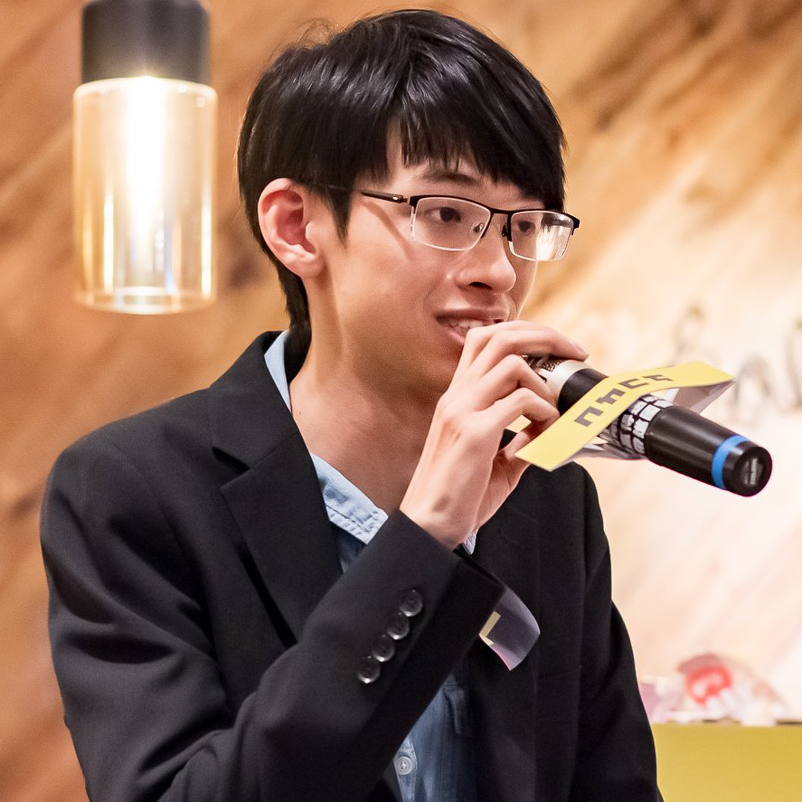

負責台灣文學作家網站的整體視覺設計與前端開發。創新地運用 Google
表單作為簡易後端資料庫，並設計程式邏輯以 Fetch
表單資料，自動生成網站所需的圖卡內容，顯著簡化內容管理流程並提高更新效率。
#獨力完成前後端 #隨機生成圖卡 #較複雜的CSS Animation樣式
負責開發桃園蘆竹地政事務所基於 LINE 前端框架 (LIFF)
的預約系統。專注於開發使用者友善的預約前端頁面，確保在 LINE App
內的流暢操作體驗。同時開發簡易後端邏輯，處理預約資料的提交、儲存與查詢，使用GoogleAppscript撰寫後端，並串接 LINE API，實現預約成功後自動發送 LINE
訊息通知給預約者，提升服務效率。
#API串接 #GoogleAppscript #LIFF #獨立負責完整前後端
擔任企劃組長，負責該中型數學學習網站的整體專案規劃和方向制定，使用React開發、Linode作為虛擬機、GITHUB版本控制，與六人團隊進行有效的分工協作，確保專案各階段按計畫進行。主導數學題庫的作用式整理，提升題庫的結構化和檢索效率，並積極參與前端和後端功能的設計與開發，將簡單的遊戲化機制融入網站，提升高中生學習的趣味性和互動性。
#React #Linode #多人協作 #完整前後端
獨立完成高學文學館旗下三個主題網站（政治文學主題網、勞工文學主題網、地景走讀網）的前端靜態網頁製作，注重使用者介面設計
(UI) 與使用者體驗 (UX)
的一致性、資訊呈現的清晰度與易讀性，以及網站在不同裝置上的良好響應式設計。
#快速架設靜態網頁
從零開始獨立構思、撰寫並成功提案此推廣南島語族文學的綜合性活動。全面負責專案團隊的籌組、招募與領導，主導為期兩天的實體市集的攤位招募、活動流程設計，以及線上講座與線上課程的內容規劃。負責與合作夥伴、講師、參展單位等進行有效的溝通與協調，並負責超過百萬元的專案經費規劃、分配與執行，成功提升公眾對南島語族文學的關注。
擔任專案經理，負責專案的整體規劃、需求分析、進度追蹤、設計與開發團隊協調、以及與客戶的密切溝通，確保專案按時程和預算順利完成並交付高品質的網站。
擔任專案經理，主導體運人才資訊系統的從無到有的設計與開發。負責深入的需求分析、系統架構規劃、設計團隊與開發團隊的管理，並與相關政府單位進行有效的協調溝通，最終成功上線此資訊系統，提升體運人才資訊管理的效率。
獨立撰寫專案企劃並成功獲得投標機會。籌組並領導專案團隊，主導串聯 25 間獨立書店與 40 位藝文出版界講師，創新導入 GatherTown 平台設計獨特的互動式線上展覽體驗。負責超過百萬元的專案經費規劃、管理與執行，成功提升線上展的參與度和話題性。